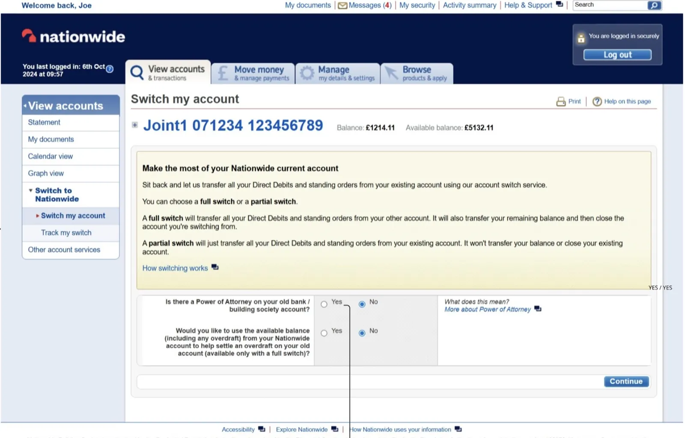
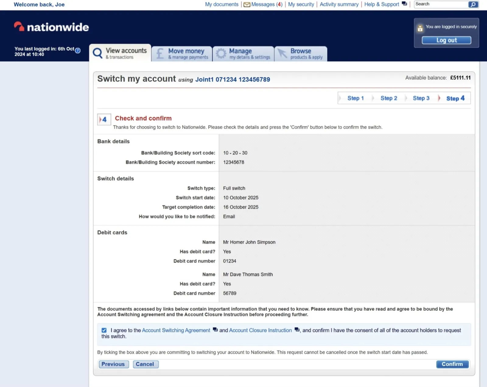
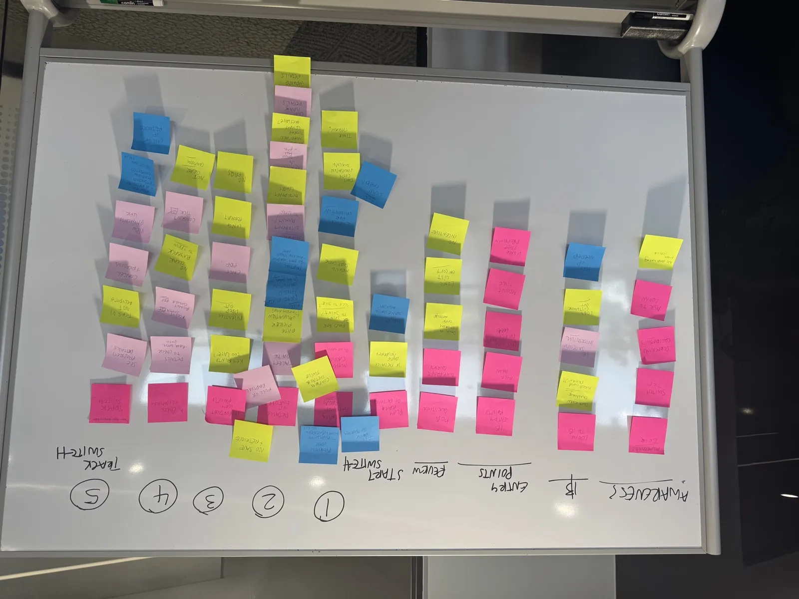
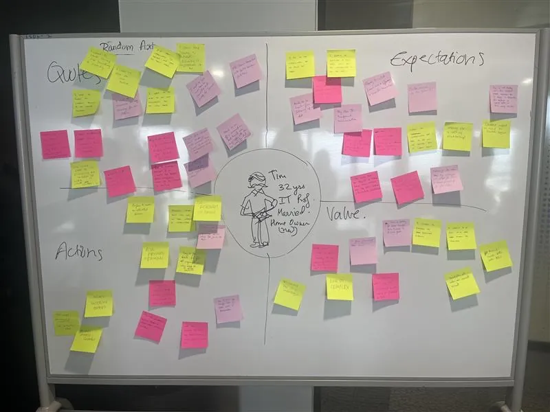
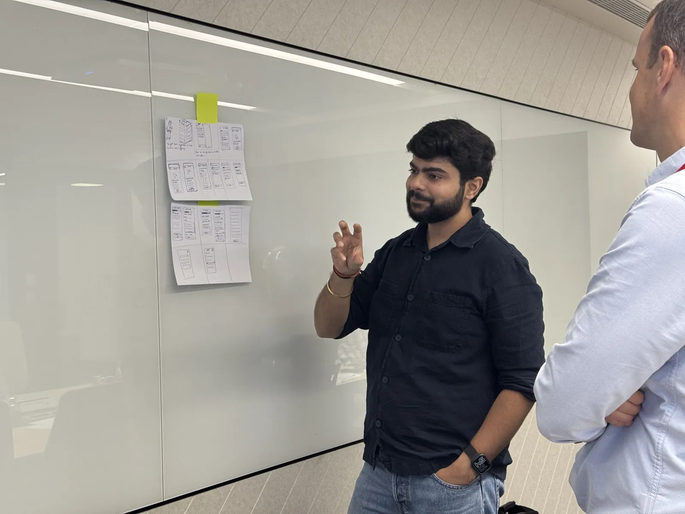
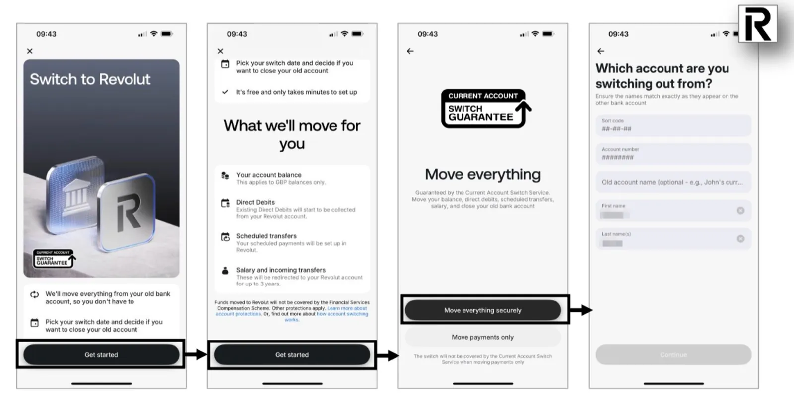
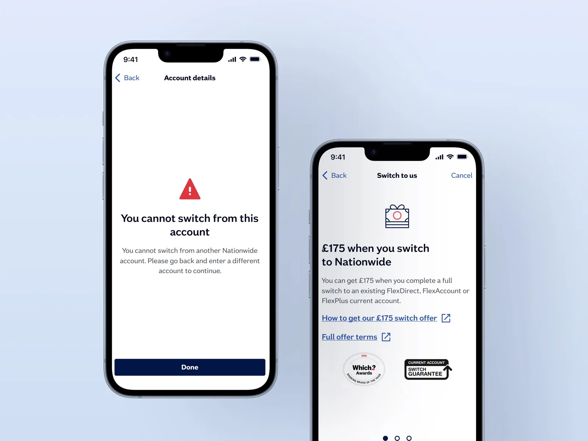
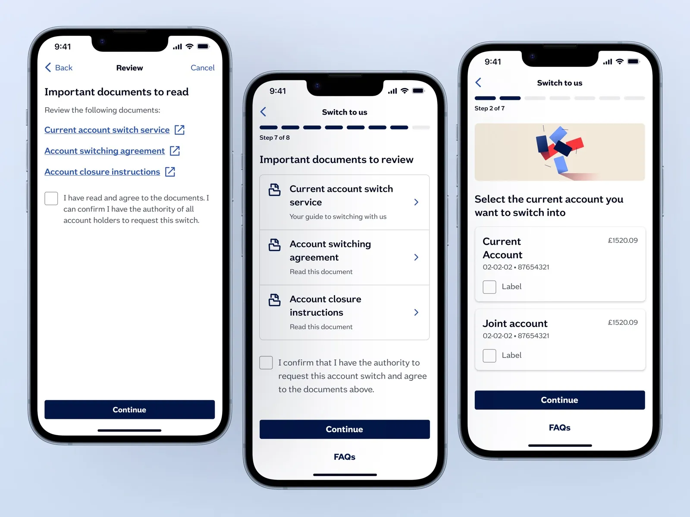
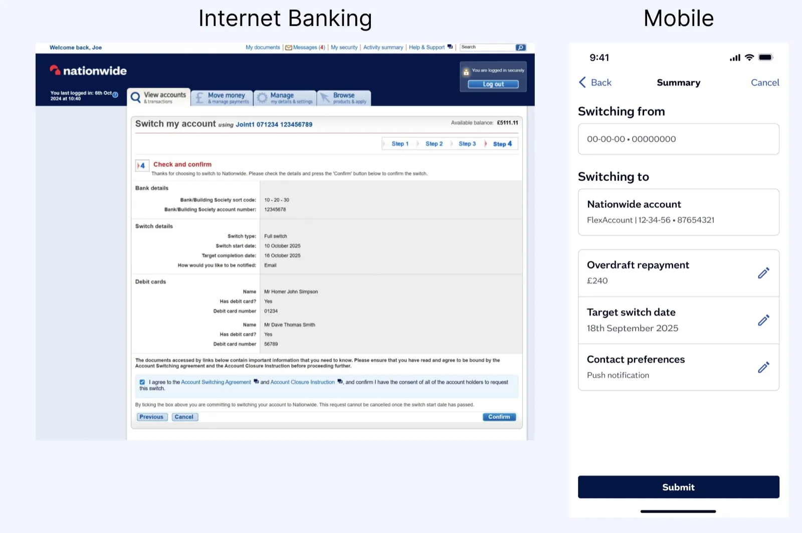
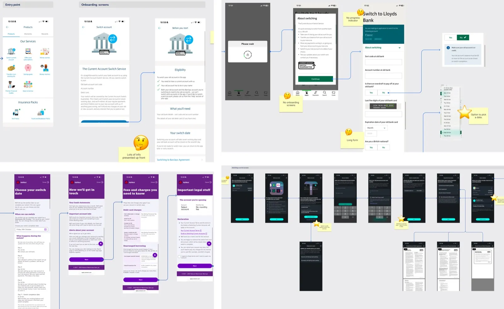

Nationwide Building Society — Case Study
Re-Architecting a Regulated Switching Journey for Mobile
Transforming a dense desktop CASS flow into a cognitively lighter, mobile-first interaction architecture without changing regulatory structure.
Designing for Reuse, Compliance & Scale
Before design began, stakeholders raised foundational questions:
- How can this journey be reusable across Internet Banking and Mobile?
- How can we leverage existing CASS APIs?
- Where should switch initiation live in the app?
- How should unhappy paths be surfaced?
- How do we ensure accessibility compliance?
This reframed the project from a mobile migration to a cross-channel architecture initiative. My role was to translate these platform-level concerns into a scalable interaction system.
Understanding the Structural Baseline
The Internet Banking CASS journey consisted of 4–5 steps. However, each step clustered multiple unrelated inputs on a single page.
Challenges identified:
- High information density
- Mixed categories within single screens
- Cognitive overload
- Limited mobile adaptability
- Implicit differentiation between Full vs Partial switch
While compliant, the structure was not optimized for mobile interaction patterns.


Mapping Emotional and Operational Friction
We reviewed:
- As-Is Journey Mapping (Bangalore workshop)
- Empathy mapping artifacts
- User story & persona created using the IBM ICA tool to accelerate discussion
Key insight: Switching accounts carries emotional weight — users seek clarity, reassurance, and control.
This validated the need for:
- Explicit switch-type differentiation
- Clear sequencing
- Strong confirmation states
- Reduced cognitive stacking



Understanding Switching Design Patterns
A competitor review helped identify:
- Step structuring approaches
- How reassurance is surfaced
- How progress indicators are handled
- Error-state communication strategies
This informed decisions around sequencing and clarity without overcomplicating the regulated structure.

From Dense Pages to Single-Intent Screens
Instead of compressing steps, the mobile strategy decomposed them.
Internet Banking:
- Fewer steps
- More information per screen
Mobile:
- One primary question per screen
- Logical sequencing
- Progressive disclosure
- Clear branching between Full and Partial switch
This reduced cognitive load while maintaining backend compatibility.



Wayfinding Without Breaking Compliance
A key debate centered around the progress indicator.
Options considered:
- Dynamic step adaptation based on branch logic
- Retaining fixed regulatory structure
Final decision:
- Maintain regulatory step structure
- Simplify sequencing clarity
- Reduce visual noise
This balanced usability improvements with system constraints.
Structuring Unhappy Paths
We explored how failed or incomplete switches should be surfaced.
Considerations included:
- Clear status communication
- Error state messaging
- Recovery pathways
- Maintaining user trust even during rejection
Failure handling was designed as part of the system — not an afterthought.
